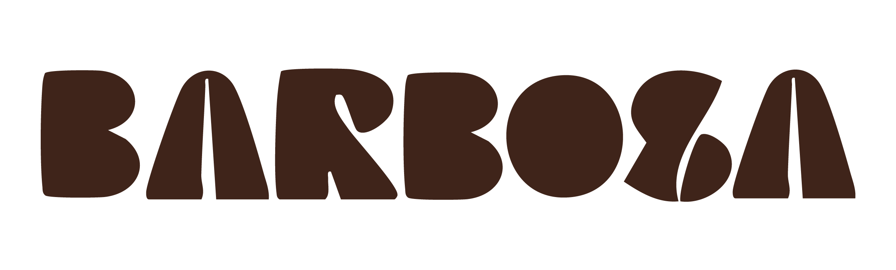
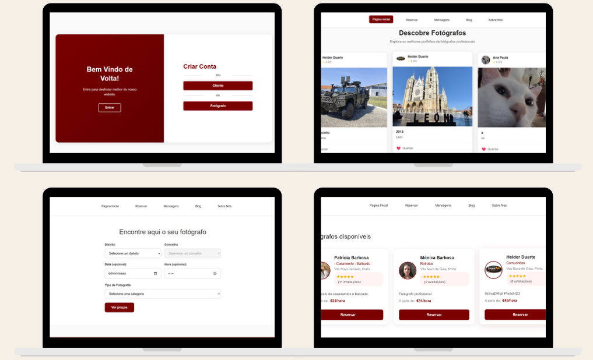

O projeto MOZE consistiu no desenvolvimento de uma plataforma web com sistema de registo de utilizadores. O objetivo foi criar uma experiência digital simples e intuitiva, permitindo aos utilizadores criar uma conta e interagir com a plataforma. O projeto envolveu a criação da interface gráfica, desenvolvimento das páginas web e implementação de funcionalidades dinâmicas.
Tipo
Projeto Web
Ano
2026
Área
Web Design / Desenvolvimento
Tecnologias
HTML, CSS, PHP, MySQL
A plataforma MOZE foi desenvolvida com o objetivo de criar uma experiência web funcional, organizada e intuitiva. O projeto permitiu explorar diferentes áreas do desenvolvimento web, desde a criação da interface visual até à implementação de sistemas dinâmicos de interação com o utilizador. Através de uma estrutura simples e moderna, a plataforma permite uma navegação acessível e uma melhor organização da informação apresentada.
Durante o desenvolvimento do projeto foram aplicadas várias etapas,
desde a definição da estrutura visual até à implementação das
funcionalidades.
Planeamento
Definição da arquitetura do website, organização dos conteúdos e
estrutura das páginas.
Design da Interface
Criação de uma identidade visual coerente, escolha de cores, tipografia
e organização dos elementos gráficos.
Desenvolvimento
Implementação das páginas web utilizando tecnologias front-end e
back-end.
Testes
Verificação da funcionalidade do sistema e melhoria da experiência do
utilizador.
HTML
CSS
PHP
MySQL
Base de Dados
A plataforma MOZE inclui diferentes funcionalidades desenvolvidas para
melhorar a interação do utilizador:
• Sistema de registo de utilizadores;
• Criação e validação de contas;
• Formulários de interação;
• Ligação com base de dados;
• Organização de conteúdos através de páginas web;
• Interface responsiva adaptada a diferentes dispositivos.
Criar uma plataforma digital funcional, combinando design e tecnologia para proporcionar uma experiência simples e eficiente.

O desenvolvimento do projeto MOZE permitiu consolidar conhecimentos
técnicos e criativos na área da produção multimédia e desenvolvimento
web.
Web Design
Criação de interfaces digitais organizadas, funcionais e adaptadas ao
utilizador.
Desenvolvimento Front-End
Construção da estrutura visual através de HTML e CSS, garantindo uma
apresentação consistente e responsiva.
Desenvolvimento Back-End
Implementação de funcionalidades dinâmicas através de PHP e ligação com
base de dados.
Experiência do Utilizador
Organização da informação e criação de uma navegação simples e intuitiva.
Visual Studio Code
HTML / CSS
PHP
MySQL
Figma
O projeto MOZE representou uma oportunidade de aplicar conhecimentos adquiridos na Licenciatura em Multimédia, explorando a ligação entre design e desenvolvimento web. A criação desta plataforma permitiu compreender melhor o processo de construção de um website completo, desde a definição da interface até à implementação de funcionalidades interativas. Este projeto contribuiu para o desenvolvimento de competências técnicas, criativas e de resolução de problemas, reforçando a importância da combinação entre tecnologia e comunicação visual.
Acede à plataforma MOZE e explora o resultado final do desenvolvimento web.
Visitar MOZE